해양공학기사 (2011-06-12 기출문제)
1과목: 해양학개론
1. 다음 중 해저의 지반암에서 채취할 수 있는 에너지자원으로 가장 가능성이 높은 것은?
- 석회암
- 석유
- 망간단괴
- 암염
(정답률: 알수없음)

2. 퇴적년대 측정에 쓰이는 210Pb법은 지각 중에 들어있는 238U 이 방사 붕괴되어 생성된 210Pb 의 농도를 측정함으로써 얻어진다. 이때 238U 과 210Pb 의 중간 계열에 속하는 기체인 동위원소는?
- 210Bi
- 222Rn
- 210Po
- 206Pb
(정답률: 알수없음)
3. 해수중 탄산염은 여러 가지 상태로 존재한다. 해양의 정상 pH(pH 8.1) 조건하에서 가장 풍부한 것은?
- CO2-3
- H2CO3
- CO3-2
- HCO-3
(정답률: 알수없음)
4. 챌린저호의 탐험 후 챌린저 보고서를 작성하고 심해저연니에 관한 연구를 한 사람은?
- Charles Darwin
- John Murray
- Vening Meinesz
- Bruce Heezen
(정답률: 알수없음)
5. 대륙지각과 해양지각의 경계선은 보통 다음 중 어느 곳에 위치하는가?
- 해안선
- 대륙봉
- 대륙사면
- 해구
(정답률: 알수없음)
6. 우리나라 주변해의 수괴 중 가장 온도가 낮은 것은?
- 동해고유수
- 황해저층냉수
- 대마난류수
- 북한한류수
(정답률: 알수없음)
7. 해수중 탄소의 방사성 동위체 농도를 측정함에 의해 간접적으로 해수의 연령을 알 수 있다. 다음 중 연령이 가장 오래된 것은?
- 대서양북부의 심층수
- 태평양북부의 심층수
- 대서양북부의 중층수
- 태평양북부의 중층수
(정답률: 알수없음)
8. 다음 중 해수의 염분 증가에 가장 큰 영향을 미치는 과정은?
- 증발
- 강우
- 해수의 결빙
- 해빙의 융해
(정답률: 알수없음)
9. 다음 영양염원소 중 가장 다양한 열역학적 산화환원 과정을 갖는 것은?
- N
- P
- Si
- Ca
(정답률: 알수없음)
10. 퇴적물의 침식ㆍ이동에서 가장 적은 유속으로 침식시킬 수 있는 지질은?
- clay
- silt
- fine sand
- heavy sand
(정답률: 알수없음)
11. 해양 유전에서 가장 많다고 예상되는 산유층(産油層)은?
- 제4기층
- 제3기층
- 백악기층
- 쥐라기층
(정답률: 알수없음)
12. 계절 수온약층과 관련이 가장 적은 것은?
- 여름철에 형성된다.
- 수온의 수직구배가 크다.
- 주로 내만에서만 형성된다.
- 겨울철에는 약해지거나 사라진다.
(정답률: 알수없음)
13. 지진성 해일인 쓰나미(Tsunami)가 수심 1km인 해양에서 전파되는 속도는 얼마인가?
- 10m/sec
- 100m/sec
- 1000m/sec
- 10000m/sec
(정답률: 알수없음)
14. 천해파의 군속도(group velocity)와 위상속도(phase velocity)와의 관계는?
- 군속도는 위상속도의 0.5배이다.
- 군속도와 위상속도가 같다.
- 군속도는 위상속도의 1.5배이다.
- 군속도는 위상속도의 2배이다.
(정답률: 알수없음)
15. 다음 중 방사성 핵종의 붕괴방정식으로 맞는 것은? (단, A는 시간 t 경과 후 방사능 농도, Ao는 초기의 방사능 농도, λ는 붕괴상수, t는 시간이다.)
- A = Ao × ln(-λt)
- Ao = A × ln(-λt)
- Ao = Ae-λt
- A = Aoe-λt
(정답률: 알수없음)
16. 다음 중 서안경계류(western boundary current)는?
- 쿠로시오 해류
- 노르웨이 해류
- 북대성양 해류
- 페루 해류
(정답률: 알수없음)
17. 해수의 평균 pH값은 약 8 정도이다. 수소이온농도가 증가했다면 어떤 형태의 이온의 조성비가 커져야 하는가?
- CO2
- H2CO3
- HCO3-
- CO32-
(정답률: 알수없음)
18. 지구상에 일어나는 조석(潮汐) 중 다음 어느 경우가 최소 조차를 보이는가?
- 달과 태양의 위치가 지구에 대해 서로 반대방향으로 일직선상에 있을 때
- 달과 태양의 위치가 지구에 대해 직각을 이룰 때
- 달과 태양의 위치가 지구에 대해 같은 방향으로 일직선상에 있을 때
- 달과 태양의 위치가 지구에 대해 45°각도를 이룰 때
(정답률: 알수없음)
19. 대마난류와 무관한 것은?
- 쿠로시오의 한 지류다.
- 한반도 남동해안과 일본서안을 따라 북상한다.
- 수온이 높은 해수를 동해에 유입시킨다.
- 염분도가 낮은 해수를 동해에 유입시킨다.
(정답률: 알수없음)
20. 파랑의 에너지는 파고(H)의 얼마에 비례하는가?
- H-1/2
- H1/2
- H
- H2
(정답률: 알수없음)
2과목: 해양수리학
21. 밀도 Froude수는 어떻게 표현되는가? (단, h : 상층부의 수심, ρ : 밀도, Δρ : 밀도차, ε = Δρ/ρ, V : 유속, g : 중력가속도, ν : 동점성계수, Ω : 회전각속도)
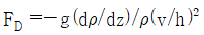
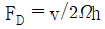
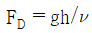
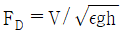
(정답률: 알수없음)
22. 폭이 좁은 하구에서의 순환현상에 큰 영향을 주지 않는 요소는?
- 코리올리힘
- 밀도차
- 조석
- 하천유량
(정답률: 알수없음)
23. 수심이 일정한 항내의 파고분포를 계산하고자 할 때 파랑변형의 주요 원인이 되는 것은?
- 회절(diffraction)
- 천수변형(shoaling)
- 반사(reflection)
- 쇄파(wave breaking)
(정답률: 알수없음)
24. 원주 주위의 흐름과 Re수(Reynolds number)와의 관계 설명 중 틀린 것은?
- Re수가 1.0 이하일 때는 층류적 흐름으로 원주를 따라 흐른다.
- Re수가 약 5 이상이면 원주 배후에 작은 소용돌이가 발생된다.
- Re수가 40~50 정도이면 Karman의 와열현상이 나타난다.
- Re수가 감소할수록 Karman의 와열은 불안정해진다.
(정답률: 알수없음)
25. 해변단면 변형 중 쇄파대에서 일어나는 표사이동 양상으로 가장 거리가 먼 것은?
- 해안선 부근에서는 부류사 이동이 매우 활발하며, 소류사 이동은 미약하다.
- 고 파랑시에는 undertow에 의하여 외해쪽으로 이동한다.
- 소상역에서는 sheet flow에 의하여 모래가 이동할 수 있다.
- 사련상에서의 와류의 발생으로 인한 부유사 이동이 발생한다.
(정답률: 알수없음)
26. 해저 모래의 이동형식을 모래입자의 운동상태에 따라 구별할 때 옳지 못한 것은?
- 해저면 위를 전동(轉動)한다.
- 해저면 위를 도약(跳躍)한다.
- 해수중을 부유(浮游)한다.
- 해저면으로 침강(沈降)한다.
(정답률: 알수없음)
27. 높은 빌딩 위에 직경 30cm, 높이 30m 인 파이프 상단에 텔레비전 안테나가 설치되어 있다. 풍속이 35m/sec 이면 파이프 밑의 휨모멘트(M)와 파이프의 전항력(D)은 얼마인가? (단, 공기의 밀도 ρ = 0.123 kgㆍsec2/m4 이며, 항력계수 CD = 0.20 이다.)
- D = 135.6 kg, M = 4068.2 kgㆍm
- D = 271.2 kg, M = 4068.2 kgㆍm
- D = 135.6 kg, M = 2034.1 kgㆍm
- D = 271.2 kg, M = 2034.1 kgㆍm
(정답률: 알수없음)
28. 내만의 길이가 1000m, 내만의 수심이 10m 일 경우 기본 진동주기(fundamental period of oscillation)와 1차 조화 진동주기(1st harmonic period of oscillation) 는 각각 얼마인가? (단, 중력가속도 g = 10m/sec2 이다.)
- 50 sec, 100sec
- 100sec, 50sec
- 100 sec, 200sec
- 200sec, 100sec
(정답률: 알수없음)
29. 수리모형 실험에서 얻은 결과를 원형으로 해석하는데 필요한 수리학적 상사성 중 관계가 가장 먼 것은?
- 운동학적 상사성
- 기하학적 상사성
- 정역학적 상사성
- 동역하적 상사성
(정답률: 알수없음)
30. 슬러지를 해양 투기할 대 해수중에서의 슬러지 확산(diffusion)에 대한 설명 중 틀린 것은?
- 슬러지는 낮은 밀도의 해수에서는계속 침강을 하고 슬러지의 밀도와 해수의 밀도가 같은 지점에 도달함에 따라 수평 확산을 한다.
- 슬러지와 해수의 밀도차가 적을수록 슬러지는 수면에서부터 얕은 깊이에서 수평 확산을 한다.
- 슬러지가 수평 확산을 시작하는 깊이에서의 희석(율)(dilution)은 최대가 되고 해저면쪽으로 내력갈수록 점점 감소한다.
- 슬러지의 부피가 증가할수록 슬러지가 수평 확산을 하는 수면에서부터의 깊이는 증가한다.
(정답률: 알수없음)
31. 그림과 같은 직사각형 단면 수문의 3m 까지 물이 차있다. 이 때 단위 폭 당 수문에 작용하는 전수압은?
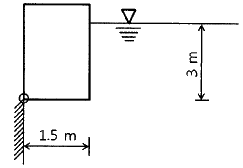
- 3.13 t/m
- 6.36 t/m
- 4.50 t/m
- 9.00 t/m
(정답률: 알수없음)
32. 다음 설명 중 옳지 않은 것은?
- 홍수추적이란 강우강도를 계산하는 것을 말한다.
- 저수지에서 어느 시간에 유입량 및 유출량의 차이는 저유량의 변화율과 같다.
- 재현기간이 10년인 홍수는 10년 이내에 오지 않을 수도 있다.
- 선형저수지는 유출량과 저유량이 선형관계를 갖는 저수지를 말한다.
(정답률: 알수없음)
33. 반일주조가 우세한 하구폭이 300m, 평균수심이 15m, 하구입구의 조류에 의한 최대유속이 1.5m/sec인 하구의 조석프리즘(조량)은?
- 2.4 × 107 m3
- 4.8 × 107 m3
- 9.6 × 107 m3
- 1.9 × 107 m3
(정답률: 알수없음)
34. 다음 중 연속방정식이 아닌 것은? (단, x, y, z : 좌표, u, v, w : 유속, ρ : 밀도, c : 농도, t : 시간)
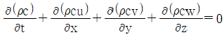
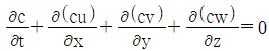
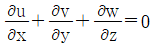
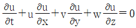
(정답률: 알수없음)
35. 상사법칙에 쓰이는 물리량의 비로써 틀린 것은? (단,
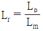
,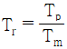
,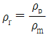
, ρ = prototype, m = model)- 면적비 Ar = Lr2
- 속도비
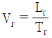
- 유량비
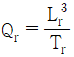
- 질량비 mr = ρrL2r
(정답률: 알수없음)
36. 다음의 파고자료를 이용하여 H1/3을 계산한 값은?
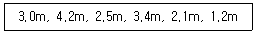
- 5.5m
- 3.2m
- 2.6m
- 3.8m
(정답률: 알수없음)
37. 다음 대조와 소조에 관한 설명 중 맞지 않는 것은?
- 천문조의 크기는 지구와 달 및 태양의 상대위치에 따라 다르다.
- 태양, 지구, 달이 일직선상에 있으며, 지구를 중심으로 좌우에 각각 태양이나 달이 있을 때에는 소조기에 해당된다.
- 태양, 달, 지구와 같이 일직선상에 있으며, 지구의 어느 한 쪽에 태양과 달이 있을 경우에는 대조기에 해당한다.
- 지구상의 어느 한 지점에서 대조와 소조는 1개월에 2회 나타난다.
(정답률: 알수없음)
38. 흐름이 부유사를 많이 포함하게 되면 다음과 같은 부유사류의 특징을 나타내게 되는데 맞지 않는 것은?
- 마찰저항이 감소한다.
- 속도경사 du/dy가 감소하여 유속이 감소한다.
- 수류의 kármán 정수가 0.4 보다 작게 된다.
- 미세한 부유사 입자의 경우 수온의 하강은 부유사량을 증가시킨다.
(정답률: 알수없음)
39. 다음 중 쇄파의 형상이 아닌 것은?
- 붕파
- 권파
- 쇄기파
- 연파
(정답률: 알수없음)
40. 조석현상에 가장 영향이 큰 주요 4분조에 대한 설명으로 틀린 것은?
- M2는 달이 상대적으로 지구를 일주함으로써 발생하는 조석이다.
- S2는 태양이 상대적으로 지구를 일주함으로써 생기는 조석이다.
- K1은 달과 태양이 그 질량을 중심으로 적도면상을 회전할 때의 조석이다.
- O1은 태양의 일주 운동에 의해 발생하는 조석이다.
(정답률: 알수없음)
3과목: 해양구조공학
41. 방파제 배치상의 유의사항으로 옳지 않은 것은?
- 빈도 및 파고가 큰 파랑에 대해 항내를 보호하도록 한다.
- 주변해역의 해황변화를 작게 할 수 있도록 한다.
- 해안의 침식이나 매몰을 야기하지 않도록 한다.
- 함내에서 선박이 강한 흐름이나 바람을 옆에서 받도록 한다.
(정답률: 알수없음)
42. 다음과 같은 장주 A가 견딜 수 있는 최대압축력의 크기가 100t이라 할 때 같은 단면을 가진 장수 B가 견딜 수 있는 압축력의 크기는?
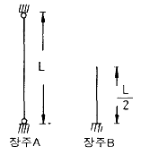
- 50 t
- 100 t
- 200 t
- 400 t
(정답률: 알수없음)
43. 상자형 바지(barge)가 길이 10m× 폭 5m× 깊이 2.5m이고 중량이 25ton이다. 화물중량 50ton을 실을 경우 흘수는 얼마가 되는가? (단, 물의 밀도는 1000kg/m3 이다.)
- 0.5m
- 1.0m
- 1.5m
- 2.0m
(정답률: 알수없음)
44. Euler의 공식에서 좌굴하중을 Pb = n2π2EI/ℓ2으로 구한다면 부재의 지지상태에 의한 정수 n2의 값 중 틀린 것은?
- 양단 힌지 : 1
- 1단 고정, 타단 힌지 : 2
- 양단 고정 : 4
- 1단 고정, 타단 자유 : 1/2
(정답률: 알수없음)
45. 다음 중 해저의 기초지반이 튼튼하고 수심이 10m 내외 정도이며, 수면 변화가 너무 크지 않은 곳에 가장 적합한 방파제는?
- 부방파제
- 사석제
- 직립제
- 혼성제
(정답률: 알수없음)
46. 좌굴에 관한 설명 중 틀린 것은?
- 좌굴하중은 좌굴강성에 비례한다.
- 좌굴하중은 기둥의 길이에 반비례 한다.
- 좌굴응력은 세장비의 제곱에 반비례 한다.
- 좌굴응력은 영계수에 비례한다.
(정답률: 알수없음)
47. 비교적 파도가 심하고 수온이 낮고 해상상태가 열악한 유럽의 북해 지역에 맞추어 설계된 해양구조물 형식은?
- 자켓 구조물
- 반잠수식 구조물
- 시추모선
- 콘크리트 중력식 구조물
(정답률: 알수없음)
48. 다음과 같은 트러스의 ab부재의 부재력의 크기는?
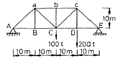
- 70.7t(압축)
- 100t(압축)
- 141.4t(압축)
- 200t(압축)
(정답률: 알수없음)
49. 다음과 같은 구조물에서 A점의 수평반력의 크기는?
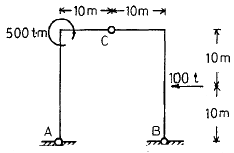
- 37.5t
- 75.0t
- 125.0t
- 250.0t
(정답률: 알수없음)
50. 그림과 같은 단순보에 대한 설명 중 잘못된 것은? (단, 폭 b, 높이 h인 구형단면)
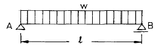
- 처짐은 하중에 비례한다.
- 처짐은 h의 3제곱에 반비례 한다.
- 처짐각은 강성에 반비례 한다.
- 처짐각은 b에 비례한다.
(정답률: 알수없음)
51. 강구조물의 볼트연결 및 용접연결을 비교 설명한 내용 중 틀린 것은?
- 취성파괴는 용접연결부에서 더 발생하기 쉽다.
- 두 경우 모두 응력집중 현상이 발생하게 된다.
- 한 연결부에 볼트와 용접연결을 함께 사용하면 좋다.
- 공장작업에서는 용접연결이, 현장작업에서는 볼트연결을 채택함이 좋다.
(정답률: 알수없음)
52. 다음의 구조물 중에서 구조 주부재가 인장력 또는 압축력으로 하중을 지지하는 것은?
- 아치(arch)
- 사장교(cable stayed bridge)
- 현수교(suspension bridge)
- 트러스(truss)
(정답률: 알수없음)
53. 다음 중 매립식 인공섬의 건설 사례가 아닌 것은?
- 일본 칸사이 신국제공항
- 통영시 마리나리조트
- 일본 코베시 포트아일랜드
- 영종도 인천국제공항
(정답률: 알수없음)
54. 고정식 해양구조물의 건조비(construction cost)에 가장 큰 영향을 주는 설계요소는?
- 설치 해역의 기온(air temperature)
- 설치 해역 조류(current)의 세기
- 설치 해역의 수심(water depth)
- 설치 해역 바람(wind)의 세기
(정답률: 알수없음)
55. 다음과 같은 원형단면 a-a에 하중 P가 작용하여 직경이 0.1cm만큼 감소되었다. 이 때 이 부재의 늘어난 길이는? (단, 포아송비는 0.4 이다.)
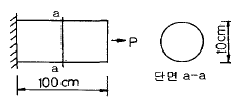
- 1.25cm
- 2.5cm
- 4cm
- 8cm
(정답률: 알수없음)
56. 그림과 같은 단면의 x-x축에 대한 회전반경의 크기는?
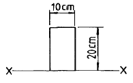
- 5.8cm
- 11.5cm
- 33.3cm
- 57.4cm
(정답률: 알수없음)
57. 두 개의 집중하중이 아래 그림과 같이 작용할 때 최대 처짐각은?
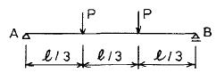
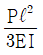
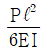
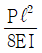
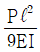
(정답률: 알수없음)
58. 다음 중 플랫품(platform)의 중량 중에서 사하중(死荷重)에 포함되지 않는 것은?
- 상부구조 중량
- 자케트 중량
- 보강재 중량
- 굴삭용 장비 중량
(정답률: 알수없음)
59. 항내에 계류된 선박의 선체운동 중에서 변위가 크고, 하역작업에 가장 큰 영향을 미치는 운동성분들로 구성된 것은?
- sway, syrge, pitch
- sway, roll, heave
- roll, pitch, heave
- yaw, sway, heave
(정답률: 알수없음)
60. 돌제의 기능 및 배치에 관한 설명으로 옳은 것은?
- 연안표사 및 파랑의 제어를 위한 구조형식이다.
- 연안표사를 차단하도록 정선에서 쇄파점까지 설치한다.
- 돌제의 간격은 돌제 길이의 1~3배로 한다.
- 돌제방향은 파랑의 진행방향과 같게 한다.
(정답률: 알수없음)
4과목: 측량학
61. 음향측심의 보정사항이 아닌 것은?
- 음속도보정
- 흘수보정
- 표고보정
- 조고보정
(정답률: 알수없음)
62. 소나(sonar)의 송파기에서 발사된 음파가 6초 후에 수파기로 반사음이 돌아왔다면 측정대상과의 거리는?
- 15,000m
- 9,000m
- 4,500m
- 3,000m
(정답률: 알수없음)
63. 방향관측에서 2″오차가 생기면 1km 전방에서의 위치 오차는 약 얼마 정도인가?
- 0.1cm
- 1cm
- 10cm
- 100cm
(정답률: 알수없음)
64. 인공위성에 의한 방법으로 관측점간의 시통이 불필요하며, 3차원 위치결정 및 대륙 간의 기선측정, 고속물체의 위치관측 등에 사용하는 범지구적 위치 결정체계는?
- EDM
- VLBI
- NNSS
- GPS
(정답률: 알수없음)
65. 연안성의 지질 중 하천에서 유입되는 쇄판의 퇴적이 적은 지역의 성분은?
- 녹니(Green Mud)
- 청니(Blue Mud)
- 적니(Red Mud)
- 화산질니(Volcanic Mud)
(정답률: 알수없음)
66. 음파탐사법 중 음향측심과 마찬가지로 소수의 음원과 수파기 만으로 대상지역 수면을 항해하면서 반사파를 연속적으로 기록해 나가는 방식은?
- 재래식 반사법
- 연속식 반사법
- 회전식 반사법
- 측사식 반사법
(정답률: 알수없음)
67. 측심선 간격을 결정하는 식 중 옳은 것은? (단, I : 측심선 간격, D : 미측심폭, A : 단위측위 정도에 대한 편의량(m), B : 측량선의 계획 측심선에 대한 사행량(m), C : 측량선 1척의 음향 도달폭(m))
- I = C+D-(A+B)
- I = C+D+(A+B)
- I = C+D-(A-B)
- I = C-D-(A+B)
(정답률: 알수없음)
68. 음향측심기에서 전기 펄스를 음향 펄스로 변환하여 수중으로 방사하는 기기는?
- 송신기
- 송파기
- 수파기
- 수신기
(정답률: 알수없음)
69. 주점거리 150mm의 사진기로 촬영고도 3000m에서 촬영한 사진축척은?
- 1/15,000
- 1/20,000
- 1/19,000
- 1/25,000
(정답률: 알수없음)
70. 다음 중 위성항법(satellite navigation)과 가장 거리가 먼 것은?
- GLONASS
- GIS
- GPS
- 도플러효과
(정답률: 알수없음)
71. 해수면의 높이는 조석의 영향 때문에 수시로 변하므로 측량시에는 조석의 높이를 고려하여 음향, 측심기록에 보정하여야 한다. 이 때 조고 보정은 어떻게 하는가?
- 조석의 높이 - 기본 수준면의 높이
- 조석의 높이 + 기본 수준면의 높이
- 기본 수준면의 높이 - 조석의 높이
- 조석의 높이 - 만조의 높이
(정답률: 알수없음)
72. 해저지질조사 방법이 아닌 것은?
- 드래지(Dredge)방법
- 정밀항타방법
- 그래브(Grab)방법
- 주상채니방법
(정답률: 알수없음)
73. GPS 측량을 이용한 위치결정법을 코드 방식과 반송파방식으로 구분할 때 코드방식에서 가장 정확도가 높은 방식은?
- C/A코드 방식
- P코드 방식
- L1코드 방식
- L2코드 방식
(정답률: 알수없음)
74. 지형측량 중 기지점에서 기기를 거치 할 수 없어 미지점에 기기를 거치하여 2개의 기지점을 시준, 관측 후 미지점의 좌표 및 위치를 구할 수 있는 측량기법은?
- 전방교회법
- 후방교회법
- 절측법
- 방사법
(정답률: 알수없음)
75. 다음 중 라이다 측정에 대한 내용으로 가장 적합한 것은?
- 자외선, 가시광선, 적외선 영역의 에너지를 탐지 또는 기록하여 얻어진 영상을 이용한다.
- 항공기 및 기구 등에 탑재된 측량용 카메라를 통해 얻어진 자료를 이용한다.
- 구조물의 측량 및 변형해석, 문화재 조사 및 복원 등에 효과적으로 사용된다.
- 지형에 대한 정밀 수치 표고모델의 획득에 이용된다.
(정답률: 알수없음)
76. 다음 중 수심측량의 방법으로 가장 보편적으로 사용하는 것은?
- 음향측심
- 사진측량
- 레이저측량
- 위성측량
(정답률: 알수없음)
77. 사진측량의 특성과 가장 거리가 먼 것은?
- 기상조건 및 태양고도 등에 영향을 받지 않는다.
- 정량적, 정성적인 측량이 가능하다.
- 측량의 정확도가 균질하다.
- 분업화에 의한 작업능률이 높다.
(정답률: 알수없음)
78. A점과 B점간의 수평거리가 20m 이고, A점의 지반고가 9.5m, B점의 지반고가 12m 이다. 두 점간의 10m 높이의 등고선이 통과하는 위치는 A점에서 얼마인가?
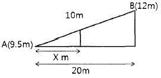
- 3.2m
- 3.6m
- 4.0m
- 4.4m
(정답률: 알수없음)
79. 음파탐사(acoustic prospecting)에 대한 설명 중 틀린 것은?
- 해저층에 대한 투과력을 높이기 위하여 음향측심보다 저주파를 사용한다.
- 반사법은 해저표면 및 그 부근 저면에서 반사된 음파의 수신기록에 의하여 조사하는 방법이다.
- 굴절법은 음원과 수신점 사이의 거리와 음파도달시간 차에 의하여 지층 내 음파속도를 구하여 지층구조를 파악한다.
- 음파탐사는 음향측심과 따로 실시하여 양자의 기록을 비교함으로써 판독을 더욱 용이하게 한다.
(정답률: 알수없음)
80. 해양측량에서 해안선의 위치를 결정하는데 사용되는 해수면의 높이는?
- 약최고고조면
- 평균해수최저면
- 평균해수면
- 약최저저조면
(정답률: 알수없음)
5과목: 재료공학
81. P.C 강봉에 대한 설명 중 틀린 것은?
- 제조방법에 따라 인발강봉, 압연강봉 및 열처리강봉으로 구분한다.
- 강봉의 신장율은 5% 이상이 되어야 한다.
- 강봉은 강연선에 비하여 부착강도가 크고 안전하다.
- 강봉(SBPD 930/1080)의 릴랙세이션은 1.5% 이하로 규정한다.
(정답률: 알수없음)
82. 지름 4cm, 길이 100cm의 봉에 6000kg의 인장하중을 부과하였다면 축방향의 신장은? (단, E = 0.63×106 kg/cm2)
- 7.58×10-2cm
- 7.58×10-3cm
- 8.58×10-2cm
- 8.58×10-3cm
(정답률: 알수없음)
83. 철강재료 함유 원소 중 기계적 성질에 가장 큰 영향을 주는 것은?
- 인
- 탄소
- 규소
- 유황
(정답률: 알수없음)
84. 금속재료의 피로시험을 가장 적합하게 설명한 것은?
- 피로시험은 정하중 또는 사하중을 부하하는 시험이다.
- 피로시험은 정하중 또는 충격하중을 부하하는 시험이다.
- 피로시험은 반복하중 또는 교번하중을 반복적으로 부하하는 시험이다.
- 피로시험은 충격하중을 부하하는 시험이다.
(정답률: 알수없음)
85. 단면적 10cm2 재료에 5000kg의 전단하중이 작용하고 있다. 전단변형도 a는? (단, 전단탄성계수 G = 0.81×106 kgf/cm2)
- a = 6.17 × 10-4
- a = 7.17 × 10-5
- a = 8.17 × 10-5
- a = 9.17 × 10-5
(정답률: 알수없음)
86. 콘크리트의 역학적 특성에서 압축강도가 클수록 작게 되는 것은?
- 압축강도에 대한 인장강도의 비
- 탄성계수
- 지압강도
- 전단강도
(정답률: 알수없음)
87. 하중작용점으로부터 멀리 떨어진 곳에서의 최대 응력은 평균응력과 동일한 분포 양상을 보이고 응력집중이 발생하지 않게 된다. 이런 현상을 가장 잘 설명하고 있는 것은?
- 재료의 연속성
- 재료의 등방성
- 생브낭 원리
- 선형탄성이론
(정답률: 알수없음)
88. 콘크리트를 이루는 기본적인 재료가 아닌 것은?
- 시멘트
- 물
- 철근
- 골재
(정답률: 알수없음)
89. 어떤 재료를 두들기면 엷게 늘어나는데 이 성질은?
- 연성(Ductility)
- 인성(Toughness)
- 취성(Brittleness)
- 전성(Malleability)
(정답률: 알수없음)
90. 해수 중에 포함된 다양한 염류 중에서 콘크리트에 침투하여 에트링가이트(Ettringite)를 생성, 콘크리트를 팽창시켜 내구성 저하와 균열을 유발하는 물질은?
- 염소이온
- 황산염이온
- 마그네슘이온
- 나트륨이온
(정답률: 알수없음)
91. 매스콘크리트에 대한 내용 중 틀린 것은?
- 매스콘크리트란 댐 등과 같이 부피가 큰 콘크리트를 말한다.
- 단위시멘트량은 소요의 워커빌리티 및 강도가 얻어지는 범위 내에서 되도록 크게 정해야 한다.
- 사용하는 시멘트는 되도록 콘크리트 부재의 내부온도 상승이 적은 것을 택한다.
- 콘크리트를 친 후 표면에 급격한 온도 변화 및 건조가 일어나지 않도록 보호해야 한다.
(정답률: 알수없음)
92. 지름 3cm, 길이 100cm의 연강봉에 인장하중을 가해 0.⑤cm 신장되고, 0.00⑤cm 수축되었다. 포아송수는 얼마인가?
- 1
- 2
- 3
- 4
(정답률: 알수없음)
93. 전단응력을 τ, 비틀림 모멘트를 T라 할 때 축의 직경 d는?
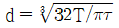
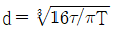
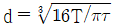
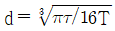
(정답률: 알수없음)
94. 다짐이 필요한 다음 실험 중 실험 1회를 완료하는 동안 다짐회수가 서로 다른 시험은?
- 모르터 압축강도시험용 3연형 공시체 제작
- 슬럼프콘에 의한 된반죽 콘크리트의 슬럼프시험
- 공기실 압력법에 의한 콘크리트 공기함유량시험
- 굳지 않은 콘크리트의 블리딩시험
(정답률: 알수없음)
95. 해양콘크리트에 대한 설명 중 옳지 않은 것은?
- 감조부에 시공이음을 두어서는 안 된다.
- 염해를 가장 많이 받을 우려가 있는 부위는 해수 중에 있는 콘크리트이다.
- 콘크리트는 재령 5일까지 해수에 직접 닿지 않게 한다.
- 간격재를 설치하여 소정의 철근피복이 확보되도록 한다.
(정답률: 알수없음)
96. 콘크리트의 압축강도 공시체에 관한 설명 중 틀린 것은?
- 굳지 않은 콘크리트 시료를 채취하여 제조한다.
- 국제적으로 같은 형상의 공시체가 사용된다.
- 콘크리트 압축강도 시험방법에 따라 시험한다.
- 28일 동안 습윤양생(표준양생) 후 시험한다.
(정답률: 알수없음)
97. 다음 환경 중에서 Ni 이 내식성을 가지는 환경은?
- 산소가 없는 물
- 해수
- 산화염
- 황을 포함한 환원성 분위기
(정답률: 알수없음)
98. 다음 연성 천이온도(dugtility transit)에 관한 설명 중 잘못된 것은?
- 재료의 연성 천이온도는 낮을수록 좋다.
- 연성 천이는 주로 체심 입방계 금속에서 일어난다.
- 결정립이 작을수록 연성 천이온도는 높아진다.
- 강 중의 Mn은 연성 천이온도를 낮춘다.
(정답률: 알수없음)
99. 콘크리트의 워커빌리티를 개선하는 혼화재료로 적합하지 않은 것은?
- 감수제
- AE제
- 포졸란
- 촉진제
(정답률: 알수없음)
100. 다음 중 재료의 역학적 성질이 아닌 것은?
- 광성
- 탄성
- 소성
- 점성
(정답률: 알수없음)